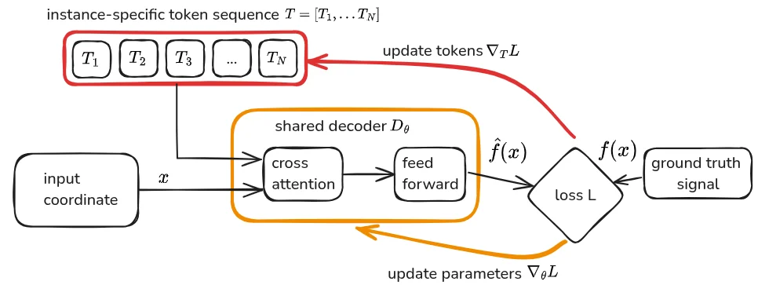
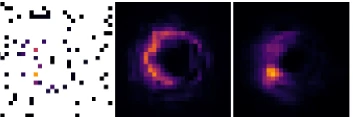
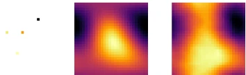
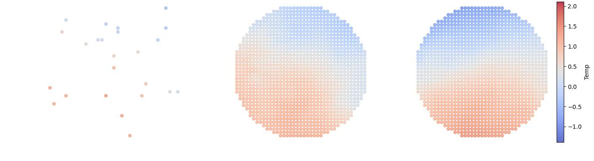
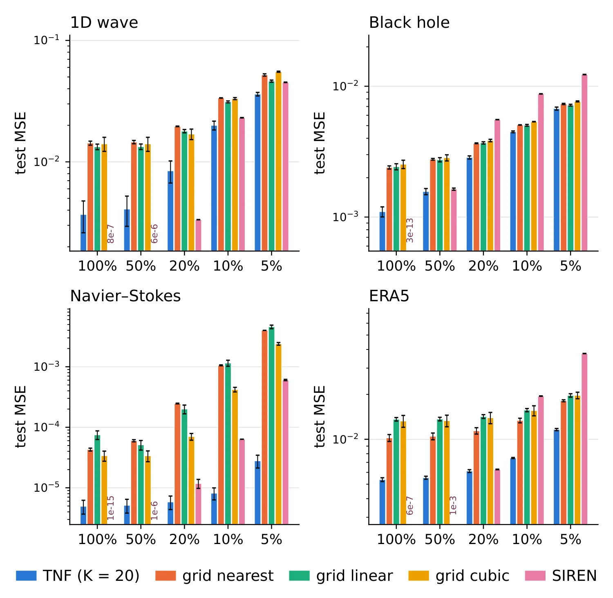
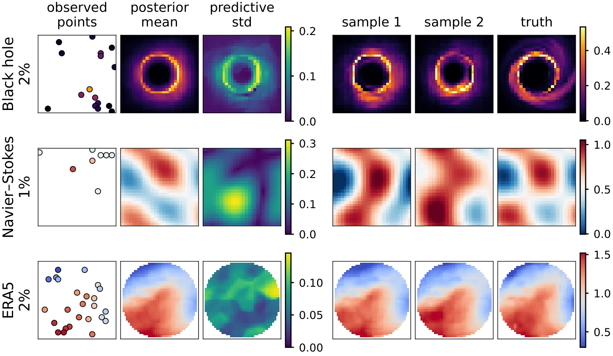
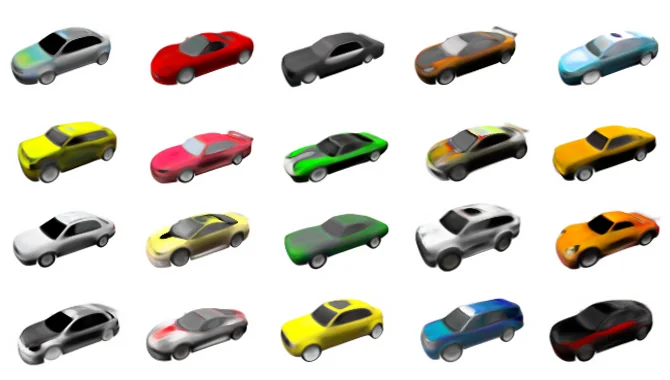
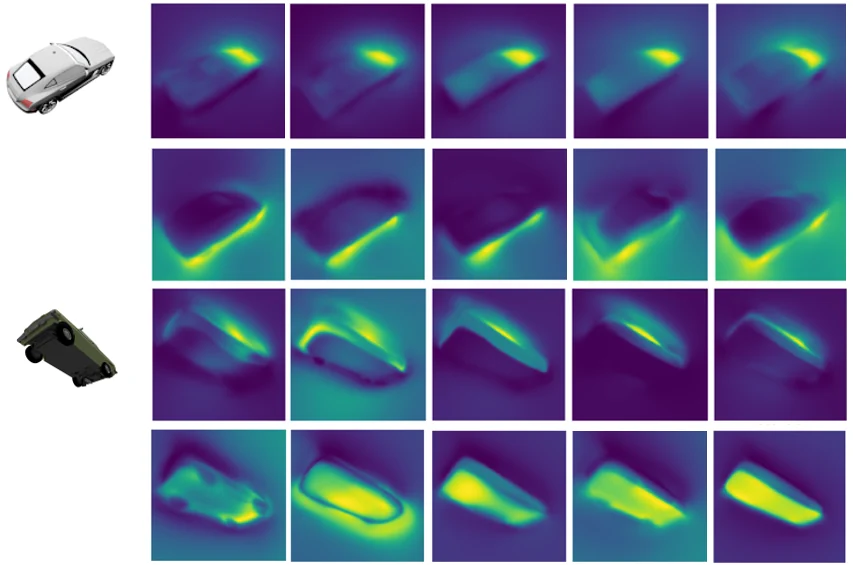

Tokenized Neural FieldsStructured Representations of Continuous Signals
A continuous signal can be represented by a small set of learnable tokens. A shared decoder reads those tokens at any query coordinate, making the same representation useful for reconstructing sparse observations, sampling plausible completions, and generating new signals.
How TNF works
Each signal has its own token set. The decoder uses cross-attention to read the tokens at a given coordinate. For a new signal, the decoder stays fixed and gradient descent fits its tokens to the available coordinate–value pairs, including scattered measurements.

Reconstruction from sparse observations
TNF fits a token set to the available measurements and uses it to reconstruct the full field. Each row shows the sparse input, the TNF reconstruction, and the grid baseline, from left to right.







Posterior sampling
A learned prior over token sets lets TNF draw multiple reconstructions conditioned on the same observations. The samples show which features vary across plausible reconstructions.

3D car generation
A Diffusion Transformer trained on car-scene token sets generates new token sets. The shared decoder maps them to 3D scenes, which can be rendered from different viewpoints.

Token specialization
Cross-attention maps show how individual tokens attend to similar regions across different car scenes.
